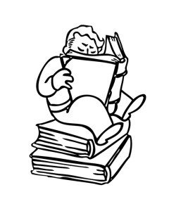

Wodson Mendson
|

|
|
|
Wodson Mendson
Universidade Federal Fluminense - UFF
oliveirawodson@gmail.com
Olá, Mundo!
I am a postdoc at Universidade Federal Fluminense - UFF working with arithmetic/algebraic aspects of foliations on projective spaces.
My CV can be found here
Interests
Algebraic geometry
Holomorphic foliations
Seminars
Summer 2022: Student Algebraic Geometry and Foliations Seminar at IMPA
Theses
PhD - IMPA: Folheações de codimensão um em característica
positiva e aplicações, 2022
Master - UFMG: The Jacobian conjecture à la Z_p, 2018
Research articles
Arithmetic aspects of the Jouanolou foliation
, arXiv, 2023
Codimension one foliations in positive characteristic
(with Jorge Vitório Pereira),
Journal of the Institute of Mathematics of Jussieu, 2023
Foliations on smooth algebraic surfaces in positive characteristic
, Journal of Pure and Applied Algebra, 2022
On unimodular and invariant domains, arXiv, 2018 (remark)
Expositions
Equações diferenciais em variedades algébricas
Tópicos em equações diofantinas
Teorema de Mordell
Slides
LEGAL (Liberdade em Geometria Algébrica) - Teresópolis - 2024: The Jouanolou foliation in positive characteristic
Journées 2023 du GDR EFI - Rennes 2023: Arithmetic aspects of planar vector fields
Journée de printemps - IRMAR 2023: On reduction modulo p of foliations
Algebraic Geometry and Complex Geometry - CIRM 2022: Foliations over positive characteristic
and irreducible components
Grupo de Seminários de Folheações - Online 2022: Folheações de codimensão um em característica positiva
Student Algebraic Geometry and Foliations Seminar - IMPA 2022: Mapas polinomiais e domínios unimodulares
Seminário de Folheações Holomorfas - IMPA 2022: Folheações de codimensão um em característica positiva e aplicações
Student Algebraic Geometry Seminar - IMPA 2021: Folheações e redução módulo p
Mestrado - UFMG 2018: Conjectura do Jacobiano à la Zp
Semana de Iniciação Científica - UFMG 2015: Dos números congruentes às curvas elípticas
Links
Encyclopedia of Mathematics
Arxiv
Mathscinet
Plimpton 322
IAF_antichess